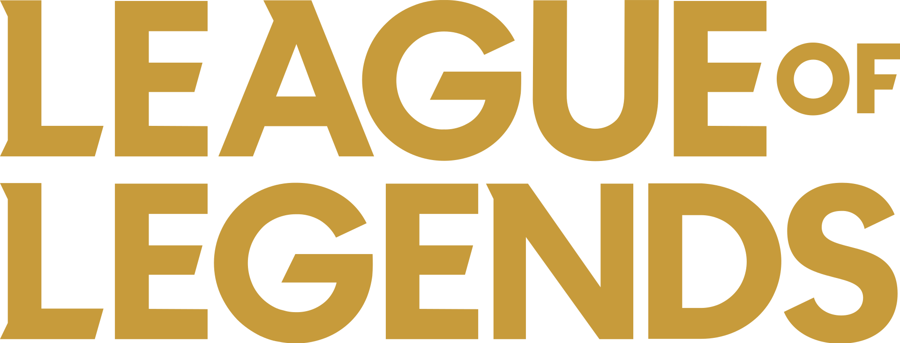

Info

Developer - Riot Games
Publisher - Riot Games
Producer - Jeff Jew
Platform - Microsoft Windows, macOS
Release - Microsoft Windows,October 27, 2009,OS X March 1, 2013
Genre - MOBA
Mode - Multiplayer
The Map
The Maps or Fields of Justice are areas in League of Legends where players play champions and battle against one another in order to achieve victory.
While there are different maps for each game mode, some maps have different skin variants based on seasonal or story events. The most widely used map for seasonal events is Summoner's Rift.
Playable Map
Howling Abyss: - The Howling Abyss is a bottomless crevasse located in the coldest, cruelest, part of the Freljord. Legends say that, long ago, a great battle took place here on the narrow bridge spanning the chasm. No one remembers who fought here, or why, but it is said that if you listen carefully to the wind you can still hear the cries of the vanquished tossed howling into the Abyss. There is only one lane in the Howling Abyss. You cannot Recall or heal in base, but there are heals near the turrets at the edge of the map.
Summoner's Rift : The oldest and most venerated Field of Justice is known as the Summoner's Rift. This battleground is known for the constant conflicts fought between two opposing groups of Summoners. Traverse down one of three different paths in order to attack your enemy at their weakest point. Work with your allies to siege the enemy base and destroy their Nexus! There are three major routes in Summoner's Rift namely: top lane, mid lane, and bottom lane. Each lane has two outer turrets and assigned champions. The top lane consists of fighter melee champions, Fighter icon.png fighters, Slayer icon.png assassins, and Fighter icon.png bruisers, or commonly referred to as AD. The mid lane consists of Mage icon.png mages or AP carries. The bottom lane is made up of Marksman icon.png marksmen or ADC, Controller icon.png supports and Tank icon.png tanks. The Jungle is a sub-lane where Junglers are assigned to control the buffs and set up ganks. The jungle is made up of monsters with the Rift Scuttler Rift Scuttler being the only non hostile monster and the Baron Baron and Dragon Dragon being the only epic monsters on the map of Summoner's Rift.
Butcher's Bridge : Once an ancient stone bridge leading to a temple entrance, it's been kept up haphazardly and primarily serves now as a connection between the slaughter docks and one of Bilgewater's slums.
Cosmic Ruins: The Cosmic Ruins are a corrupted corner of a once-great world that has been harvested and ejected into the vast emptiness of space. A black hole looms in the center of the map, pulling all survivors into the infinite depths of the Dark Star.
Crash Site: Ziggs crash landed on a remote alien world. It is the job for the crew of the Morning Star to save him from the planets dangerous wildlife as well as escape from Ordinal Kayn Ordinal Kayn.
Crystal Scar: The Crystal Scar was once known as the mining village of Kalamanda, until open war between Demacia and Noxus broke out over control of its vast underground riches. Settle your disputes on this Field of Justice by working with your allies to seize capture points and declare dominion over your enemies!
Proving Grounds: Single-lane map replaced by the Howling Abyss.[1]
Substructure 43 : The Substructure 43 is located in the deep underbelly of The City.
Temple of Lily and Lotus: The Temple of Lily and Lotus is a long-forgotten temple of the Canghapi Vastaya icon.png vastaya, located somewhere in Ionia Crest icon.png Ionia.
Twisted Treeline : Deep in the Shadow Isles lies a ruined city shattered by magical disaster. Those who venture inside the ruins and wander through the Twisted Treeline seldom return, but those who do tell tales of horrific creatures and the vengeful dead.
Valoran City Park: Valoran City Park is a favourite hot-spot for Star Guardians. It has since been attacked by creatures from the Void and is up to the Star Guardians to protect the city, expel the monsters, and save the day.
Game Play
In the game, two teams of five players battle in player-versus-player combat, each team occupying and defending their half of the map. Each of the ten players controls a character, known as a "champion", with unique abilities and differing styles of play. During a match, champions become more powerful by collecting experience points, earning gold, and purchasing items to defeat the opposing team. In League's main mode, Summoner's Rift, a team wins by pushing through to the enemy base and destroying their "Nexus", a large structure located within.
League of Legends is a multiplayer online battle arena (MOBA) game in which the player controls a character ("champion") with a set of unique abilities from an isometric perspective. As of 2023, there are over 160 champions available to play. Over the course of a match, champions gain levels by accruing experience points (XP) through killing enemies. Items can be acquired to increase champions' strength, and are bought with gold, which players accrue passively over time and earn actively by defeating the opposing team's minions, champions, or defensive structures. In the main game mode, Summoner's Rift, items are purchased through a shop menu available to players only when their champion is in the team's base. Each match is discrete; levels and items do not transfer from one match to another.